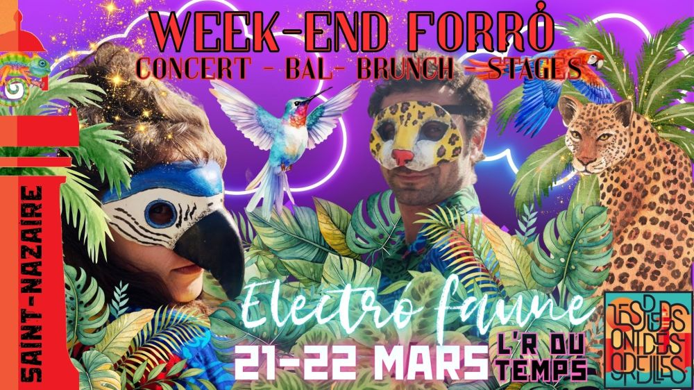

Week-end forró avec Electrofaune

🌴🐆🦜 Week-end Nordeste du Brésil & Électro Faune🦜🐆🌴
Danser libre, danser fauve !
Notre association de forró vous propose un week-end un peu différent 🌊
Moins centré sur le forró pur, il ouvre un espace plus large autour des cultures du Nordeste du Brésil, de leurs voix, de leurs rythmes et de leurs imaginaires, en dialogue avec les musiques électroniques 🔥🎶
Un temps pour danser autrement, écouter autrement, expérimenter et partager 🌞🌿
🌺✨ Samedi 21 mars
💃🪗 Pratique forró – playlist
📍 Salle Gambetta
🕓 16h → 19h
💰 5€ / gratuit pour ceux qui viennent au concert le soir
👉 Adhésion à l’association obligatoire
Un moment convivial pour se retrouver, faire circuler la danse et lancer le week-end en douceur 🌴🎶
🐆🌴🌺 Concert Électro Faune – SOIRÉE MASQUÉE 🌺🌴🐆
📍 L’R du Temps
🕣 À partir de 20h30
💰 12 € – billetterie HelloAsso (réservation vivement conseillée)
Préparez-vous à une nuit bestiale, tropicale et masquée 🐍🔥
Électro Faune propose un set électro nourri par les rythmes du Nordeste du Brésil, traversé de sonorités électroniques organiques et dansantes 🌊🦎
Les compositions et les textes célèbrent la liberté de mouvement et la libération des corps par la danse 🌞🐾
🎭 Soirée déguisée, bestiale et MASQUÉE
Plumes, feuilles, peaux sauvages, masques, maquillages…
Se masquer pour laisser l’animal danser, pour entrer pleinement dans la transe 🐯🌺🦜
🌞🌴 Dimanche 22 mars
🥭☕ Brunch partagé
🕛 12h → 15h
📍 Salle Polyvalente Dubé – Saint-Nazaire
🍽 Auberge espagnole
Un temps simple et chaleureux pour se retrouver, échanger et prolonger l’expérience 🌺✨
🎶🌺 Stage de chant du Nordeste brésilien
🎤 avec Lise Dieumegard
📍 Salle Hibiscus – Saint-Nazaire
🕑 15h → 17h
💰 15 €
Française passionnée par le Brésil 🇧🇷, Lise Dieumegard s’est immergée au fil de ses voyages dans les musiques et cultures du Nordeste 🌍🎶
Elle propose un stage dédié à la transmission des chants du Nordeste, en valorisant les compositeur·ices et l’histoire de ces musiques vibrantes et solaires 🌞🪘
Stage ouvert à toutes et tous 🌈
Un espace de voix, d’écoute et de voyage musical 🌊🎤
🎧🪘 Stage de musique improvisée
🎶 avec Boris Vassallucci
📍 Salle polyvalente Dubé – Saint-Nazaire
🕓 15h → 17h
💰 20 €
✨ Descriptif détaillé à venir
Un temps d’exploration sonore et d’improvisation collective, en résonance avec l’esprit du week-end 🌿🔥
🌴✨ Un week-end pour se laisser traverser
Entre danse, chant, électro, Nordeste du Brésil,
ce week-end invite à venir comme vous êtes… ou comme vous rêvez d’être 🌺🐆🦜
BILLETERIE